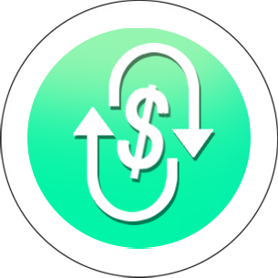

Galaxy Pixel is a Metaverse, NFT platform developed on the Binance Smart
Chain (BSC) ecosystem. Galaxy Pixel gives users an overwhelming and
exciting experience of the universe with vast and mysterious galaxies.
GPT's goal is that players who can own new planets, constellations, and
lands... will experience exclusive services that only players who own GPT
can buy and develop. Galaxy Pixel builds on the trend of the future, which
is also the vision of the world's leading billionaires, corporations, and
investment funds such as Elon Musk - Tesla, Jeff Bezos - Amazon... GPT
promises to be a project full of development potential.
GPT's ecosystem includes:
GPT stake: platform users who want to support the GPT ecosystem can stake
GPT then pay the interest along with many benefits in the GPT ecosystem,
holders will have the right to vote on the system's administrators
GPT app: developed on two operating systems Android and iOS, users can
download GPT application and use it in an easy and convenient way. GPT
parachain/maket: auction, buy, sell and exchange NFT mining products found
in the GPT ecosystem GPT land: virtual real estate on the GPT ecosystem,
users can buy small planets or lands in big planets waiting for prices to
rise to sell or lease back to exploit resources in exchange for things
valuable products for sale or auction on parachain market ... GPT AR: GPT
for GPT Land purchases. With GPT the platform provides a decentralized
advertising infrastructure where GPTLand holders can earn passive income
with GPT tokens by putting in content sponsor into their AR experience.
And there are many other interesting features that we will complete and
update in the future!

